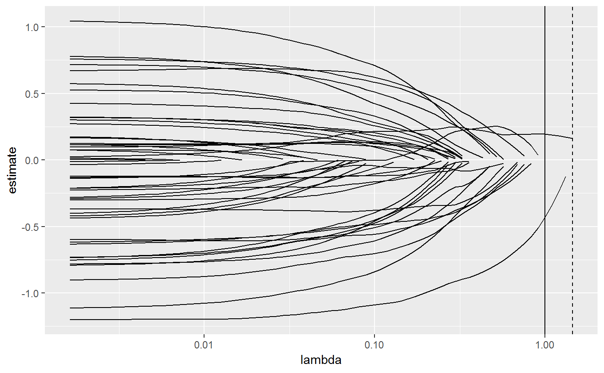

Tidy summarizes information about the components of a model. A model component might be a single term in a regression, a single hypothesis, a cluster, or a class. Exactly what tidy considers to be a model component varies cross models but is usually self-evident. If a model has several distinct types of components, you will need to specify which components to return.
# S3 method for cv.glmnet tidy(x, ...)
| x | A |
|---|---|
| ... | Additional arguments. Not used. Needed to match generic
signature only. Cautionary note: Misspelled arguments will be
absorbed in |
A tibble::tibble with one-row for each value of the penalization
parameter lambda in x and columns:
Value of the penalty parameter lambda.
Median loss across all cross-validation folds for a given lambda.
Standard error of the cross-validation estimated loss.
lower bound on confidence interval for cross-validation estimated loss.
Upper bound on confidence interval for cross-validation estimated loss.
Number of coefficients that are exactly zero for given lambda
Other glmnet tidiers: glance.cv.glmnet,
glance.glmnet, tidy.glmnet
if (requireNamespace("glmnet", quietly = TRUE)) { library(glmnet) set.seed(27) nobs <- 100 nvar <- 50 real <- 5 x <- matrix(rnorm(nobs * nvar), nobs, nvar) beta <- c(rnorm(real, 0, 1), rep(0, nvar - real)) y <- c(t(beta) %*% t(x)) + rnorm(nvar, sd = 3) cvfit1 <- cv.glmnet(x,y) tidy(cvfit1) glance(cvfit1) library(ggplot2) tidied_cv <- tidy(cvfit1) glance_cv <- glance(cvfit1) # plot of MSE as a function of lambda g <- ggplot(tidied_cv, aes(lambda, estimate)) + geom_line() + scale_x_log10() g # plot of MSE as a function of lambda with confidence ribbon g <- g + geom_ribbon(aes(ymin = conf.low, ymax = conf.high), alpha = .25) g # plot of MSE as a function of lambda with confidence ribbon and choices # of minimum lambda marked g <- g + geom_vline(xintercept = glance_cv$lambda.min) + geom_vline(xintercept = glance_cv$lambda.1se, lty = 2) g # plot of number of zeros for each choice of lambda ggplot(tidied_cv, aes(lambda, nzero)) + geom_line() + scale_x_log10() # coefficient plot with min lambda shown tidied <- tidy(cvfit1$glmnet.fit) ggplot(tidied, aes(lambda, estimate, group = term)) + scale_x_log10() + geom_line() + geom_vline(xintercept = glance_cv$lambda.min) + geom_vline(xintercept = glance_cv$lambda.1se, lty = 2) }#>#>